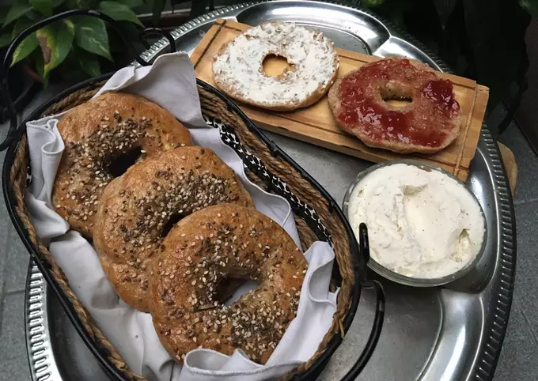

- Ingredientes:
- 11 raciones
- 500 grs harina integral
- 100 grs harina 0000 o harina de avena
- 20 grs (2 cdas) levadura instantánea
- 2 cdas aceite
- 1 cdita azúcar
- C/n sal
- C/n agua tibia (270 ml aprox.)
- Huevo batido y semillas para decorar (opcional)
- En un bowl, mezclar todos los ingredientes y por último agregar el agua tibia de a poco, para no pasarnos y que la masa quede perfecta. Si les queda muy aguada, agregar más harina integral, y si les queda muy seca, seguir agregando agua. Incorporar todo hasta formar una masa tierna.
- Dejar reposar la masa (media hora aprox.) tapando el bowl con papel film o un repasador en un lugar calentito (frente a la estufa, adentro del horno apagado) para que leve y duplique el tamaño rápidamente.
- Cuando duplique su tamaño, amasar para desgasificar y dividir la masa en bollitos iguales (aprox. 10), darles la forma redonda y hacerles un hoyo en el centro (grande). Dejar reposar los bollitos una hora más en una asadera con harina esparcida para que no se peguen.
- Una vez pasado el tiempo, cuando los bollitos hayan crecido, ponerlos en agua hirviendo 1 minuto de cada lado. Colocarlos sobre un repasador para que absorba el agua.
- Colocarlos en una asadera aceitada, pincelarlos con huevo batido, ponerle semillas por arriba (opcional) y mandarlos al horno a 180 grados por 20 minutos aprox., o hasta que los pisos doren.
- Se pueden comer y rellenar con lo que quieran! Tanto cosas dulces como saladas. Les dejo el link de mi queso crema casero: https://Cookpad.com/uy/recetas/13555280-queso-crema-casero?invite_token=txrGqYhEBRXp5cnu8hHNr9v4&shared_at=1599078904 y de mi mermelada de frutilla casera: https://Cookpad.com/uy/recetas/13367645-mermeladajalea-de-frutillas?invite_token=M8oTg8fujPgskGRFpiCnNvZz&shared_at=1599078939 para que puedan hacerlos también y acompañar estos bagels tan deliciosos! Espero sus fotos!